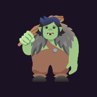

Two minutes, and The Gig Goblins Tracker opens like a real app — full screen, one tap, no browser bar.

Has to be done in Safari — Chrome and other browsers on iPhone can't add it to your home screen.
The goblin icon now sits on your home screen. Tap it anytime to open the tracker full-screen, no address bar.
Works in Chrome. Other Android browsers may offer something similar under a slightly different name.
It'll open like any other installed app from here on — no need to repeat this.
No — once it's added, the icon stays on your home screen or app drawer. Tap it like any other app from now on.
Not quite — there's no store listing, just this link. It behaves like an app once installed (its own icon, full-screen, no browser bar), which is what actually matters here.
No. Everything is stored centrally for the whole crew, not on your phone, so removing or reinstalling the icon never affects what's in the hoard.